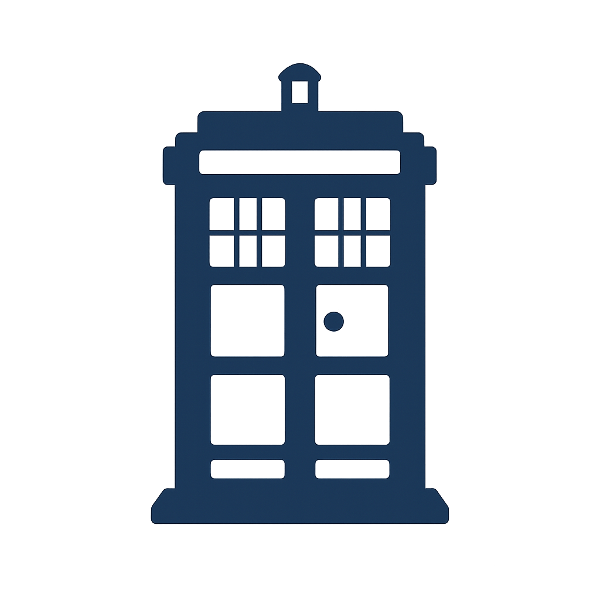

ThesaurusDoctor
Scan uw termenbron door tijd en ruimte
TARDIS Intake
De ThesaurusDoctor stemt de tijdlijn af op uw universum.
Organisatie universum
Collectiestelsel
Publieksuniversum
Onderwijsstelsel
Overheidsstelsel
Archief of erfgoed
Ander universum
Naam van de termenbron
Ouderdom van de tijdlijn
Regeneraties
Geen regeneraties
Enkele regeneraties
Meerdere regeneraties
Onbekend
Tijdlijn afwijkingen
Dubbele tijdlijnen
Weggevallen relaties
Verouderde verschijningen
Gesloten universum
Verdwenen termen
Spontane mutaties
Overlappende universa
Villain patronen
Dalek patroon
Cyberman afwijking
Weeping Angel effect
Vashta Nerada schaduw
Silence moment
Andere afwijking
Scan de tijdlijn met de TARDIS
Tijdlijnanalyse
Paradoxen
Samenvatting
Sonic Screwdriver Actions
Genereer Time Fix Rapport (PDF)